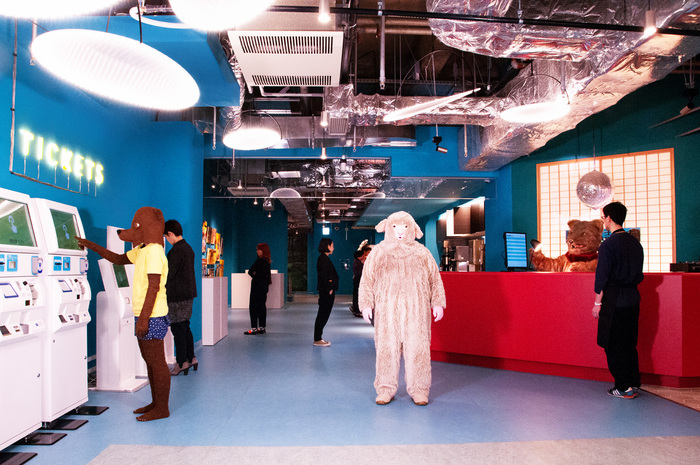

東京ミニシアターMAP

東京ミニシアターMAP
アップリンク渋谷
〒150-0042 東京都渋谷区37 宇田川町37−18トツネビル1-2F
https://shibuya.uplink.co.jp/
MAP
アップリンク吉祥寺
〒180-8520 東京都武蔵野市吉祥寺本町1丁目5-1 パルコ地下2F
https://joji.uplink.co.jp/
MAP
恵比寿ガーデンシネマ
〒150-0013 東京都渋谷区恵比寿4-20-2 恵比寿ガーデンプレイス内
https://www.unitedcinemas.jp/yebisu/index.html
MAP
シネスイッチ銀座
東京都中央区銀座4-4-5 旗ビル
http://www.cineswitch.com/
MAP
神保町シアター
東京都千代田区神田神保町1-23
https://www.shogakukan.co.jp/jinbocho-theater/
MAP
ポレポレ東中野
〒164-0003 東京都中野区東中野4-4-1 ポレポレ坐ビル地下
https://www.mmjp.or.jp/pole2/
MAP
飯田橋ギンレイホール
〒162-0825 東京都新宿区神楽坂2-19
https://www.ginreihall.com/
MAP
下北沢トリウッド
〒155-0032 東京都世田谷区代沢5-32-5-2F
http://tollywood.jp/
MAP
目黒シネマ
〒141-0021 東京都品川区上大崎2-24-15
hhttp://www.okura-movie.co.jp/meguro_cinema/now_showing.html
MAP
MAP
×